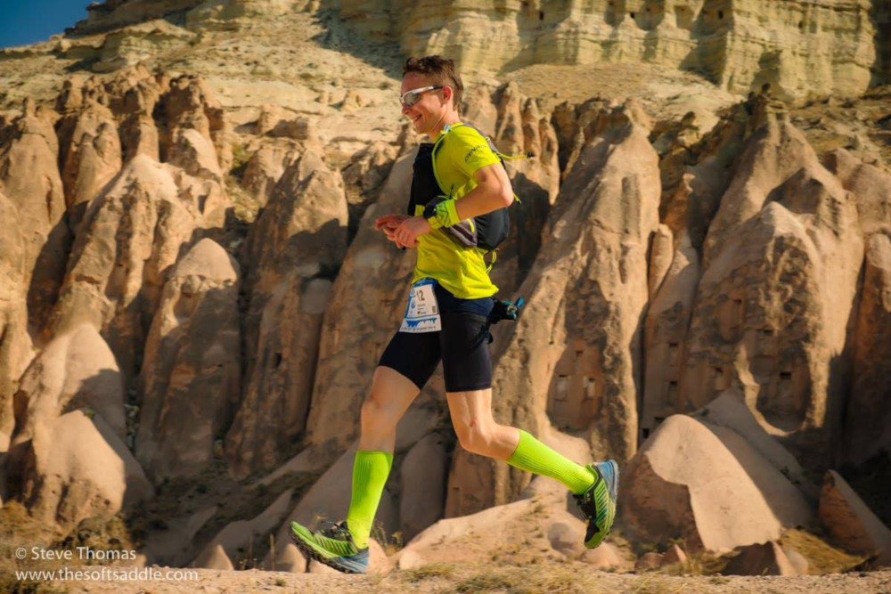

Крепатура: біль і щастя
Нещодавно Олександр подолав 120-кілометровий марафон, то ж знає про крепатуру практично все! Його величезний досвід різноманітних видів спорту – легка атлетика, сноубординг, карате та професійні наукові знання в сфері молекулярної біології наразі відкривають нам безцінні science-based knowledge про те, як подолати та оминати крепатуру.
Відразу слід сказати, що саме слово "крепатура" є трохи сленгом, у серйозних колах таке називають синдромом відтермінованого м'язового болю(від. англ. delayed oncet muscle soreness, DOMS).
Крепатура виникає, коли ми різко вирішили, що пора займатися спортом та займалися ним, поки не впали. Також вона неодмінно з'явиться при виконанні вправ, де має місце одночасне розтягування і скорочення мікроволокон м'язу, та при задіюванні маловикористовуваних раніше груп м'язів.
Цікаво, що інтенсивність больових відчуттів зростає протягом перших 12-24 годин після припинення фізичних навантажень, досягаючи піку в інтервалі 24-72 години.
Чому виникає крепатура?
Довгий час вважалося, що крепатура з'являється через накопичення у м'язах лактату (лактат – молочна кислота, що є метаболітом глюкози та утворюється під час її анаеробного розщеплення – коли ми інтенсивно тренуємося і виникає брак кисню). Однак, насправді, 90% лактату нейтралізуються буферними системами організму вже через 40 хв після завершення вправ. Наразі, доведеною причиною крепатури є поява мікророзривів у структурі м'язових волокон.
Унаслідок цього виникають00099-8/fulltext) запальні реакції, міграція в зону запалення імунних клітин і виділення ними цитокінів. Вони взаємодіють із рецепторами нервових закінчень та викликають відчуття болю.
Лише біль чи й шкода?
Шкода є – але тимчасова. Якщо не <<зловживати>> отриманням крепатури – нічого страшного не відбудеться. Це певний фізіологічний шлях, який доводиться проходити нам і нашому тілу для того аби підвищити чи покращити наші фізичні кондиції. Шкода може бути, якщо давати навантаження, які призводять вже не до крепатури, а травмування. Або ж перенавантажувати себе при наявності крепатури, що теж суттєво підвищує ризик травмування.
Чи говорить присутність синдрому відтермінованого м'язового болю про ефективність навантажень?
Ні, на це не варто орієнтуватися. Крепатура ознака, того що ми недостатньо треновані, або мали перерву у тренуваннях, перевантажили певну групу м'язів чи навантажили нові групи м'язів, які не використовували раніше.
Як її позбутися?
Природньою реакцією на появу болю в м'язах є бажання уникати будь-яких фізичних вправ і рухів. Однак, в більшості випадків виконання вправ з меншим навантаженням чи із задіянням іншої групи м'язів, а також застосування підходів, що покращують кровообіг та лімфодренаж будуть більш ефективним, аніж просто пасивний відпочинок. Адже всі вони допомагають зменшити запалення та пришвидшити виведення продуктів обміну з пошкоджених тканин.
Тому варто продовжувати тренування, однак суттєво зменшити навантаження, працювати з іншими групами м'язів.
Однак іноді у важких випадках ліпше зробити перерву у тренуваннях та дати собі можливість відновитися. Вправи на розтягування в період 24-72 години, після появи крепатури, слід виконувати дуже обережно.
Ефективним та приємним засобом від крепатури є масаж. У проміжок 24-72 години після тренувань він значно зменшує неприємні відчуття у м'язах. Про масаж для бігунів можна почитати детальніше ось тут. При чому, навіть якщо з тих чи інших причин немає змоги відвідувати масажиста – досить ефективним також буде використання масажного ролу.
Іншим ефективним засобом є занурення у холодну воду– прийняття ванни чи плавання в басейні. Дослідження показують, що дія прохолодної води 11-15°С протягом 11–15 хв дає кращий ефект, ніж пасивне відновлення.
Використання фізичних вправ, масажу, розтяжки, слід робити обережно08889-4/fulltext) зважаючи на відчуття тіла. Не рекомендовано прийом стероїдних протизапальних засобів (ібупрофен та ін.), вони практично не дають ефекту.
Якщо ж хворобливі відчуття не проходять протягом 5-7 днів, це може свідчити про травму. У такому випадку слід звернутися до лікаря.
Чи є якісь лайфхаки, як займатися, так щоб крепатура не виникала?
Слід тренуватися регулярно, не збільшувати тривалість та інтенсивність вправ більш аніж на 10%, а також намагатися постійно включати в тренувальну програму невелику кількість нових, <<незвичних>> вправ, які будуть задіювати нові групи м'язів та допомагати <<пропрацьовувати>> все тіло. Важлива хороша розминка(розігріті м'язи – менше пошкоджуються) і заминка– аби покращити крово- та лімфо обіг у м'язах.
Ефективним є виконання вправ на розтягуваннядо і після навантажень.
Важливим є і збалансований раціон, зокрема, присутність в ньому достатньої кількості білків. Наприклад, показано, що амінокислоти із розгалуженим ланцюгом (ВСАА) зменшують ймовірність виникнення мікротравм ум'язах та розвиток запальних реакцій.
А до яких заходів вдаєшся ти після ультрамарафону або важких забігів чи тренувань?
- холодна вода: занурення ніг у холодну воду гірської річки в Карпатах чи басейн на 10-15 хв 2-3 підходи, або ж максимально холодний душ для ніг;
- багато пиття – аби пришвидшити процеси виведення продуктів обміну із тканин;
- сон – це основний інструмент відновлення для тіла, хоча після ультра – часто важко нормально заснути наступну ніч;
- харчування – важливо поїсти достатньо вуглеводів та білків після ультра аби перекрити енергетичні витрати організму та допомогти швидшому відновленню ушкоджених структур;
- активний відпочинок на наступний день – проста хода, їзда на велосипеді – дозволять покращити кровообіг у ногах не даючи великого ударного навантаження;
- масаж, масажний рол, електроміостимуляція – додаткові засоби, які за наявності – стараюся застосовувати.
Загалом, регулярні фізичні навантаження та продуманий тренувальний план це на 90% запорука того, що після тренування не виникне синдрому відкладеного м'язового болю. Якщо ж після перерв у тренуваннях, змагань або ж при виконанні нових для нас вправ крепатура з'явилася – її не слід боятися. Це нормальна фізіологічна реакція тіла, яка дозволяє організму швидко адаптуватися до фізичних навантажень та рухатися далі до нових звершень.
